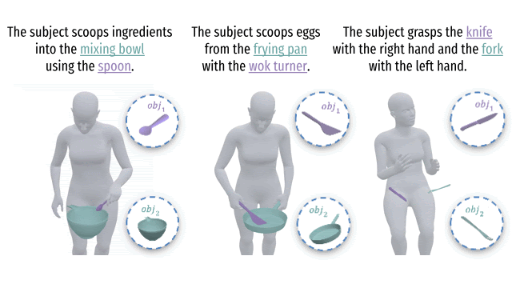
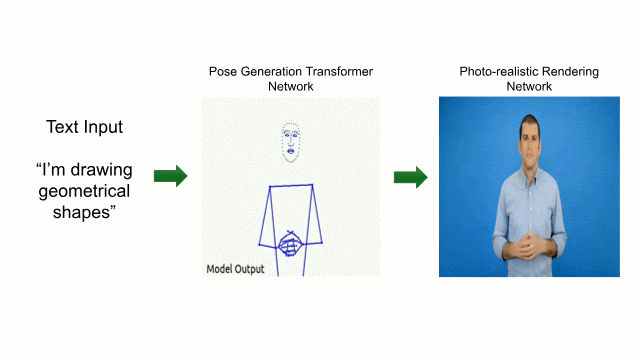
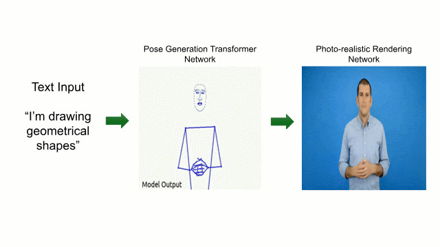
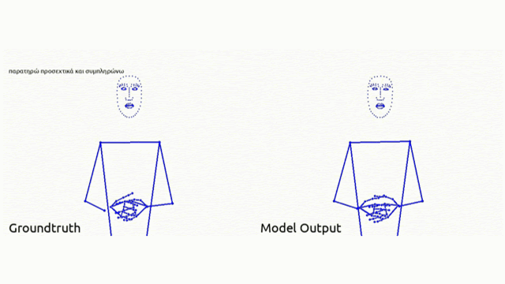
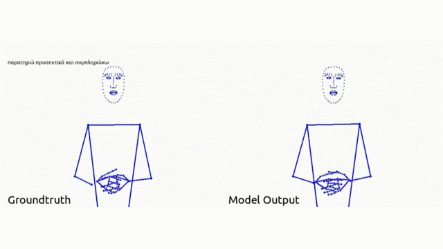

|
Chrysa Pratikaki I am a PhD student at Imperial College London, Computing Department, advised by Dr. Jiankang Deng. and Prof. Stefanos Zafeiriou. My research focuses on human motion generation and human-object interaction, with particular interest in synthesising physically plausible 3D motions involving multiple objects and scenes. Previously, I received my MEng Diploma in Electrical and Computer Engineering from the National Technincal University of Athens (NTUA). I conducted my diploma thesis on Sign Language Production, supervised by Dr. Anastasios Rousos and Prof. Petros Maragos. |

Publications |
|
 |
Dex2HOI: Dexterous Bimanual Two-Object Interaction Generation
Chrysa Pratikaki, Pablo Ruiz-Ponce, Jiankang Deng, Stefanos Zafeiriou and Rolandos Alexandros Potamias Preprint, 2026 project page / arXiv / code / abstract |
| Recent advances in 4D Human-Object Interaction (HOI) generation have enabled increasingly realistic motion synthesis, particularly for single-object manipulation. Yet current research overlooks an inherent property of human behavior: people naturally coordinate both hands and manipulate multiple objects simultaneously. To address this gap, we present Dex2HOI, a unified diffusion model for single- and two-object HOI synthesis from text. At its core, Dex2HOI employs a Dual-Stream Diffusion approach, where each object is processed in a dedicated interaction stream and coordinated through bidirectional cross-attention. To synthesize the final motion, we introduce a Motion Fusion Network integrated with novel hand-relative object representations and contact-aware conditioning applied across the whole sequence. By sampling the diffusion process autoregressively over prefix-conditioned windows, Dex2HOI generates arbitrarily long sequences at real-time speed omitting redundant test-time optimization, achieving up to ×540 inference speed-up over prior state-of-the-art methods. Extensive evaluation on both single- and two-object benchmarks demonstrates state-of-the-art quantitative results, taking a step beyond conventional single-object HOI generation and toward expressive multi-object manipulation. | |
|
  |
Text-to-Sign Language Production via Intermediate Skeletal Representations Using Transformers and Neural Rendering
Chrysa Pratikaki, Stavroula-Evita Fotinea, Eleni Efthimiou, Panagiotis Paraskevas Filntisis, Anastasios Roussos and Petros Maragos SLTAT Workshop in ACM IVA, 2025 paper / abstract |
| Computer-assisted Sign Language (SL) systems offer a promising solution for real-time communication and education within Deaf and Hard-of-Hearing (DHH) communities. In this paper we tackle the production of Sign Language videos from text sentences by proposing a novel two-way transformer-based translation system. We use extended 2D skeletal poses from MediaPipe as an intermediate representation step. Following our Sign Language Production (SLP) pipeline, we generate a synthetic, highly-detailed SL output, that mimics signers from the original dataset, by performing neural rendering on the transformer-generated skeletal poses. This enables the creation of signer-specific SLP systems from a relatively limited training set. We evaluate on a large-scale Greek Sign Language Dataset and conduct an extended user evaluation study, proving our pipeline’s effectiveness across different signers and a broad vocabulary. | |
|
  |
A Transformer-Based Framework for Greek Sign Language Production using Extended Skeletal Motion Representations
Chrysa Pratikaki, Panagiotis Paraskevas Filntisis, Athanasios Katsamanis, Anastasios Roussos, Petros Maragos ACM PETRA, 2025 🏆 Best Paper Award paper / abstract |
| Sign Languages are the primary form of communication for Deaf communities across the world. To break the communication barriers between the Deaf and Hard-of-Hearing and the hearing communities, it is imperative to build systems capable of translating the spoken language into sign language and vice versa. Building on insights from previous research, we propose a deep learning model for Sign Language Production (SLP), which to our knowledge is the first attempt on Greek SLP. We tackle this task by utilizing a transformer-based architecture that enables the translation from text input to human pose keypoints, and the opposite. We evaluate the effectiveness of the proposed pipeline on the Greek SL dataset Elementary23, through a series of comparative analyses and ablation studies. Our pipeline’s components, which include data-driven gloss generation, training through video to text translation and a scheduling algorithm for teacher forcing - auto-regressive decoding seem to actively enhance the quality of produced SL videos. | |
|
Website template from Jon Barron. |